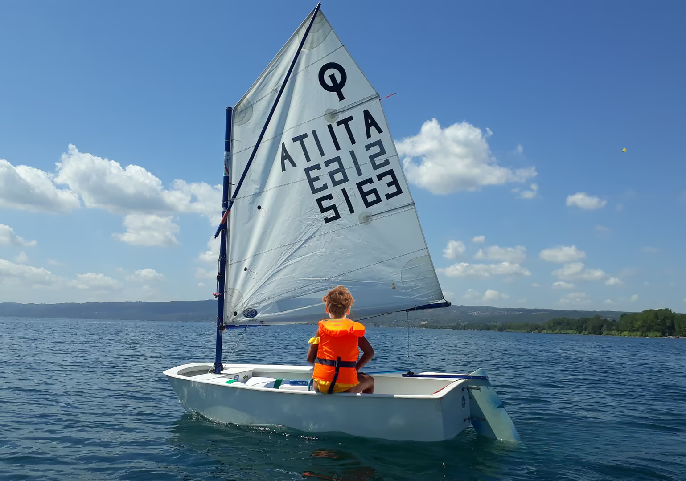

Optimist

Descrizione
L'Optimist è la deriva più diffusa al mondo per l'iniziazione alla vela dei giovani. Con la sua forma a "scatola di sapone", è incredibilmente stabile e sicura. La sua unica vela e l'attrezzatura semplice permettono ai bambini di imparare i fondamentali della navigazione in modo intuitivo e divertente.
A chi è adatta?
È la barca obbligatoria per tutti i bambini e ragazzi dagli 8 ai 15 anni che vogliono imparare le basi della vela e iniziare a competere nelle prime regate giovanili.
| Scheda Tecnica | |
|---|---|
| Lunghezza fuori tutto | 2,36 m |
| Larghezza | 1,12 m |
| Superficie Velica | 3,3 m² |
| Peso Scafo | 35 kg |
| Equipaggio | 1 persona (bambino/ragazzo) |